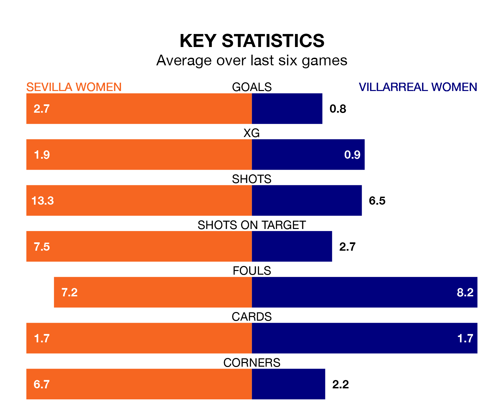

Sevilla Women are heavy favourites to keep all three points at home in Saturday's early kick-off against Villarreal Women.
Sevilla, who sit sixth in Primera Division Women with 13 games played, are priced at 1.4 to seal victory at the Estadio Jesús Navas.
Sitting eight places and 13 points behind them in the table, Villarreal are 6.7 to win with *Betting Company*, while the draw is at 4.5.
With 10 goals in 13 games so far this season, Villarreal are scoring at below the league average rate with 0.8 goals per game. And they are conceding more than average, letting in 25 goals at a rate of 1.9 per game.
Sevilla, meanwhile, are above average scorers, with 2.0 goals per game, compared to a league average of 1.6. They have conceded 1.9 goals per game.
The home team are in fantastic form in Primera Division Women, with five wins and a draw from their last six games.
With a win and two draws over that period, the visitors' form is much worse – they have taken five points from 18, compared to Sevilla's 16.
In Cristina Martín-Prieto Gutierrez, Sevilla have one of the league's most on-form strikers so far this season. She has notched seven goals in 13 appearances, to sit fifth in the scoring charts.
Villarreal's top scorers, with three goals each, are Claudia Iglesias and Kayla McCoy.
In the last five years, Sevilla and Villarreal have played each other on four occasions. Sevilla won three of them and Villarreal one.
On average, Sevilla scored 2.2 goals and Villarreal 1.2 in those matches.
Their last meeting was on February 5, when Sevilla won 1-0 at home.
Sevilla's last match was on January 7, a 3-1 win against Sporting de Huelva, with Martín-Prieto Gutierrez (two) and Klára Cahynová getting the goals for Sevilla.
Villarreal lost 5-0 against Levante Women last time out, on January 6.
Updated: 06:13 (UTC), 18/01/24